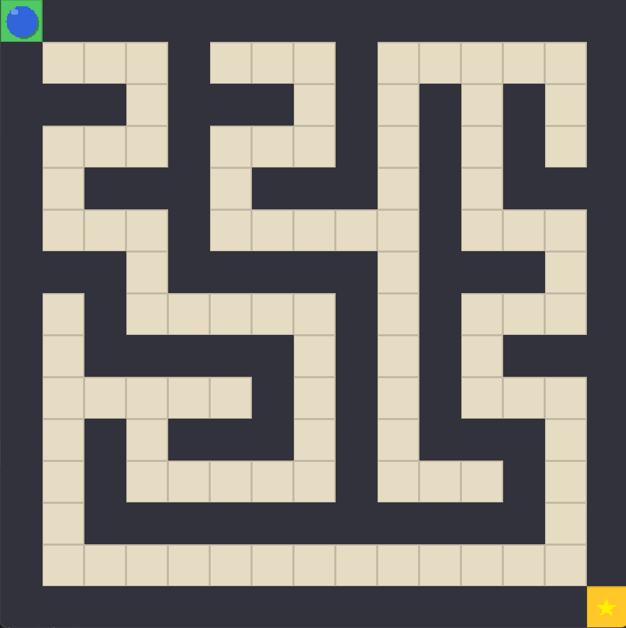
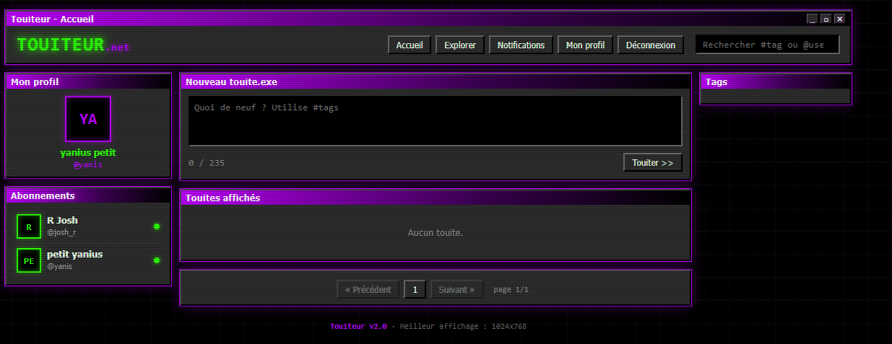
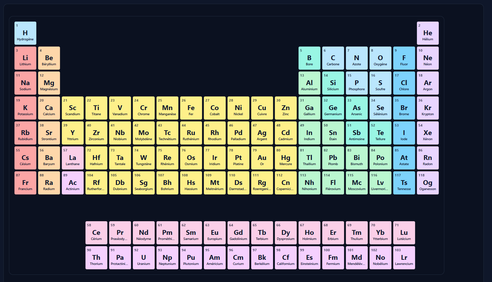

- 2024 - Présent BUT Informatique
- 2024 Baccalauréat Général
Passionné par le développement web, d'application et la conception logicielle.
Je conçois des solutions logicielles fiables et bien structurées, de la modélisation à l'implémentation. À la recherche d'une opportunité de stage pour mettre en pratique mes compétences sur des projets concrets.

Projet Zeldiablo
Application Java • MVC • Tests unitaires
Mes qualités
- 01Curieux et motivé
- 02Esprit d'équipe
- 03Autonome et rigoureux
Les technologies que je connais
Au fil de ma formation et de mes projets, j'ai développé des bases solides en développement, en conception logicielle et en gestion de projets informatiques.
Langages & POO
-
Java
Conception logicielle, MVC, JavaFX, POO
-
PHP
POO, standards PSR-4, routage, architecture web
-
Python
Scripts, interfaces graphiques
Développement web
-
JavaScript
Manipulation du DOM, interactions sans framework
-
HTML5
Sémantique, structure de page
-
CSS3
Flexbox, CSS Grid, responsive design
Bases de données
-
SQL
Requêtes relationnelles, modélisation de données
-
PL/SQL
Procédures stockées, triggers, scripts de base de données
Système & automatisation
-
Shell (Bash)
Commandes Unix/Linux, scripts d'automatisation
SAE 2.01 — Application Zeldiablo
Mai 2026
Une application Java conçue en équipe pour créer un jeu de labyrinthe. Ce projet m'a permis de mettre en pratique la conception logicielle, l'architecture MVC et le développement d'une interface avec JavaFX.
Objectif
Proposer une solution fiable, maintenable et simple à utiliser, de la modélisation des besoins jusqu'à la livraison.
Technologies
Java · JavaFX · JUnit · Git
Compétences développées
- Analyser et modéliser les besoins
- Réaliser une application structurée
- Tester et corriger les fonctionnalités
- Travailler efficacement en équipe
SAE 2.02 — Algorithmique des graphes & Itinéraires
Mai 2026
Développement d'une application d'optimisation de trajets modélisant un réseau de transport multimodal. Ce projet a mobilisé la théorie des graphes pour implémenter, comparer et évaluer l'efficacité d'algorithmes de recherche du plus court chemin sur des jeux de données réels.
Objectif
Modéliser un réseau sous forme de graphe pondéré et proposer un calcul d'itinéraire optimal fiable en termes de temps et de distance, tout en mesurant précisément la complexité temporelle et spatiale des solutions.
Technologies & Notions
Java · Dijkstra · Bellman-Ford · Théorie des graphes · JUnit · Git
Compétences développées
- C2 — Optimiser : analyser la complexité et choisir les structures de données adaptées
- Modéliser un problème complexe à l'aide de graphes orientés et pondérés
- Concevoir et dérouler des bancs de tests pour valider les performances
- Travailler avec rigueur sur la gestion des cas limites et la robustesse du code
Développement application web sécurisée : Touiter
À compléter
Développement d'une application web sécurisée de type réseau social, permettant aux utilisateurs de publier des touites, de suivre d'autres utilisateurs et d'interagir avec le contenu. Ce projet met l'accent sur l'implémentation de fonctionnalités sur le réseau, la gestion des utilisateurs grâce à une base de données complète.
Objectif
Créer un réseau social fonctionnel et sécurisé, avec des fonctionnalités comme la publication de messages, le suivi d'utilisateurs et l'interaction avec le contenu.
Technologies
PHP · MySQL · HTML5 · CSS3 · JavaScript
Compétences travaillées :
- Concevoir et implémenter une application en partant de rien
- Renforcer notre relation avec Git pour la gestion de version et la collaboration
- Lier l'application à une base de données pour stocker et récupérer les informations des utilisateurs et des publications

(utilisation d'un framework github pour ce projet)
Tableau périodique PHP
Octobre 2026
Passionné par la chimie et le développement web, mon premier projet personnel se devait de réunir ces deux centres d'intérêt. J'ai donc développé un tableau périodique en PHP, afin de commencer à explorer les possibilités du langage PHP.
Objectif
Me familiariser avec le langage PHP et ses possibilités, tout en créant un projet qui me permet de combiner la chimie et le développement web.
Technologies
PHP · HTML5 · CSS3 · JSON
Compétences travaillées :
- Lire et comprendre la documentation de PHP
- Implémenter des fonctionnalités tout en apprenant de nouvelles techniques
- Utiliser JSON pour échanger des données entre le client et le serveur

Musique
La musique occupe une place essentielle dans mon quotidien, entre découverte et création.
Mon objectif est de creer une application de lecture de musique avec des fonctionnalités innovantes comme un modificateur de pitch et de vitesse en temps réel.
Mon rapport à la musique
J'ai toujours été attiré par tout ce qui contenient de la musique, la façon dont elle peut évoquer des émotions et créer une atmosphère unique, c'est ce qui m'a poussé à créer moi même mes propres instrumentals.
Pratique
J'essaye de pratiquer régulièrement, que ce soit sur un piano ou sur mon ordinateur, j'aime libérer mes idées à travers la musique.
Intérêts
- Découvrir de nouveaux artistes et de nouveaux styles
- Apprendre à jouer de nouveaux instruments et de nouveaux accords
- Retranscrire mes idées en musique
Sport
Le sport m'aide à séparer travail et détente, que ce soit en regardant un match ou en pratiquant un sport.
J'ai toujours été attiré par le sport, que ce soit le basketball, ou le tennis étant petit, c'est de là que vient mon rapport au sport.
Mon rapport au sport
Je considère le sport comme un moyen concret de progresser, autant physiquement que mentalement, et également à avoir une rigueur dans ce que je fais au quotidien.
Le football
Je n'aimais pas le football quand j'étais petit, mais grâce à mon entourage, j'ai découvert l'attrait de ce sport et j'ai commencé à suivre tout ce qu'il se passe dans ce vaste univers.
Intérêts
- Développer l'endurance, constance et rigueur
- Me relaxer et décompresser
- Mesurer les progrès sur le long terme
- Trouver un équilibre entre travail et plaisir